Madeira
Mountain trails and Atlantic views make Madeira a great destination for travelers who enjoy nature.
Stories and ideas for your next trip.
The same twelve articles can be shown as cards, a compact list, or a magazine layout.

Mountain trails and Atlantic views make Madeira a great destination for travelers who enjoy nature.
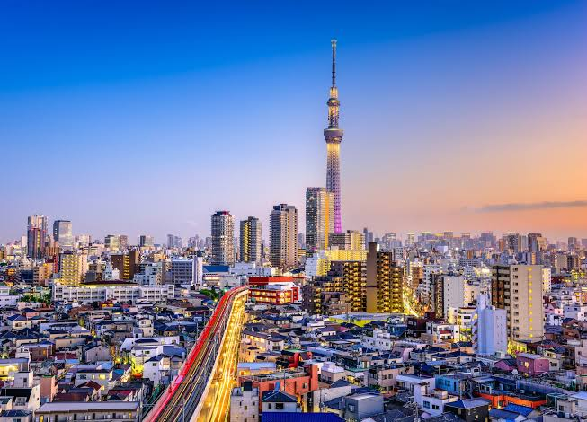
Tokyo combines traditional neighborhoods, modern architecture, shopping districts, museums and a huge food culture. Different parts of the city can feel completely different.
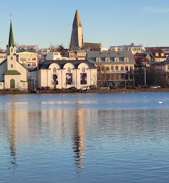
A starting point for waterfalls, volcanoes and geothermal landscapes.
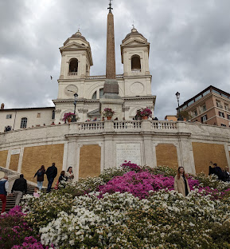
Ancient history, architecture and Italian food make Rome one of Europe's most interesting cities to explore.
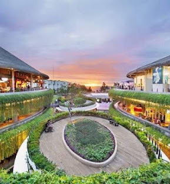
Beaches, temples and tropical landscapes offer a mix of culture and relaxation.
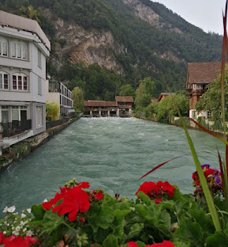
Surrounded by mountains and lakes, Interlaken is a popular place for hiking, skiing and other outdoor activities.
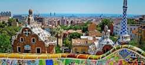
Mediterranean food, unusual architecture and lively streets create an energetic city trip.
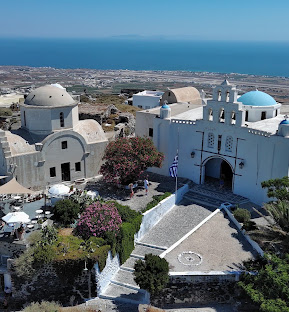
White villages, sea views and volcanic scenery make this Greek island easy to remember.
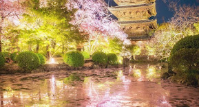
Temples and historic streets offer a quieter side of Japan.
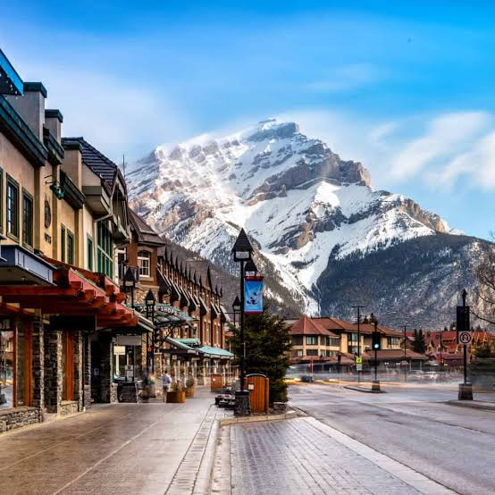
Mountain trails, forests and turquoise lakes make Banff ideal for outdoor trips and longer adventures in nature.
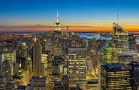
Museums, parks, neighborhoods and entertainment give visitors many different ways to experience the city.
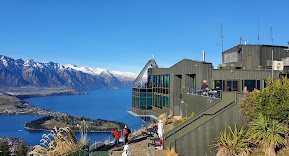
Mountains and lakes make Queenstown a popular destination for adventure travel.